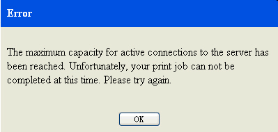

이 주제에서는 Information Center에 있는 하나 또는 여러 개의 주제를 인쇄하는 방법을 설명합니다.
주제를 인쇄하려면 탐색 보기에서 다음 단계를 수행하십시오.
- 도구 모음에서 주제 인쇄(
 )를 클릭하여 메뉴를 표시하십시오.
)를 클릭하여 메뉴를 표시하십시오.- 선택한 주제만 인쇄하려면 선택한 주제 인쇄를 클릭하십시오.
- 선택한 주제 및 모든 하위 주제를 인쇄하려면 선택한 주제 및 모든 하위 주제 인쇄를 클릭하여 인쇄 미리보기 창을 여십시오.
- 인쇄 전에 페이지 설정을 변경하려면 미리보기 창에서 을 선택하고 설정을 수정하십시오.
- 인쇄 창에서 인쇄를 클릭하십시오. 제한사항:
MaxTopics 및 maxConnections는 빠른 인쇄의 제한사항입니다. 이는 시스템이 시작되기 전에 자원 최적화를 위해 환경 설정에 저장된 매개변수입니다.
인쇄하려는 주제의 수가 maxTopics에 정의된 수를 초과하는 경우, 경고 창이 표시됩니다.그림 1. 경고 창 예제
- maxTopics 제한사항에 동의하는 경우, 예를 클릭하여 인쇄를 계속하십시오.
- 인쇄를 취소하려면 아니오를 클릭하십시오.
프린터 연결 수가 maxConnections에 정의된 수를 초과하는 경우, 오류 창이 표시됩니다.그림 2. 오류 창 예제- 확인을 클릭하십시오. 나중에 다시 시도하십시오.